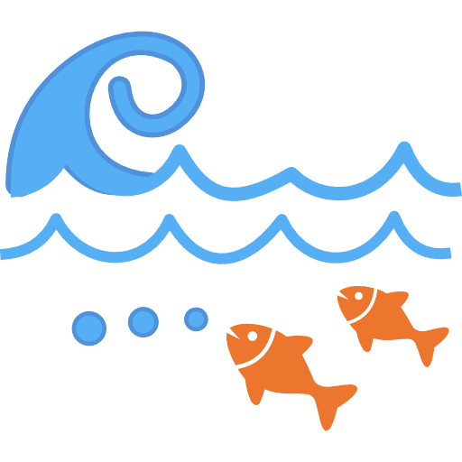

@caribexplorer
★ ★ ★ ★ ★
RoamChaguaramas helped me find spots I didn't know existed before; i recommend to you all.
★ ★ ★ ★ ★
RoamChaguaramas helped me find spots I didn't know existed before; i recommend to you all.
★ ★ ★ ★ ★
Loved the guide for restuarants. Saltwater Cafe was amazing.
★ ★ ★ ★ ★
We planned our family day trip using this site. Impeccable options.

★ ★ ★ ☆ ☆
It's good. Normal website.
★ ★ ★ ★ ★
Very helpful travel tips and accurate maps. This site made my hiking trip super easy!
★ ★ ★ ★ ☆
I wasn't expecting this site to be of much help but it's been super useful because I don't know around Trinidad that much.
★ ★ ★ ★ ☆
The maps are the best and really good events are given sometimes.
★ ★ ★ ★ ★
Loved Bamboo Cathedral, very pretty view.